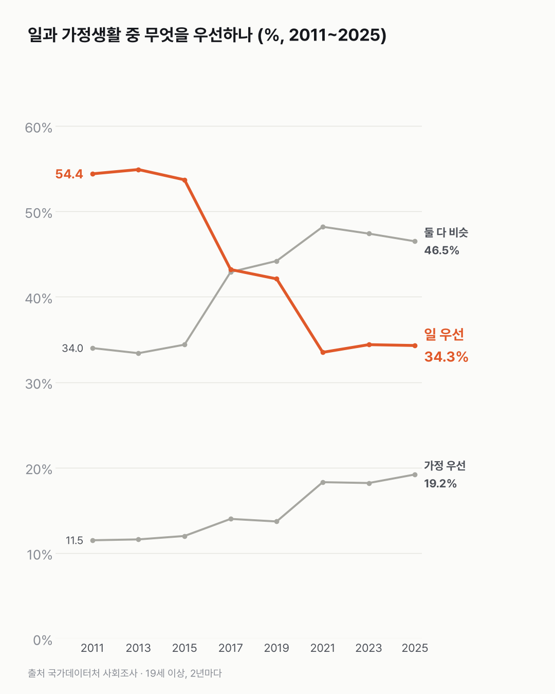
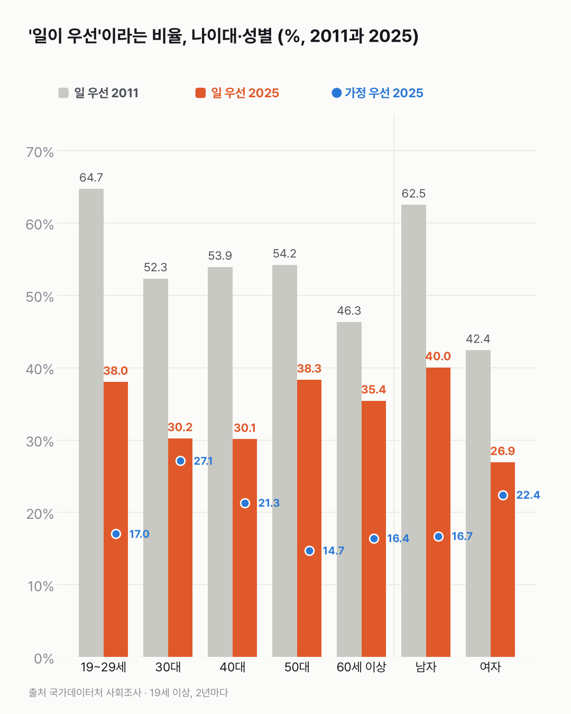

'일이 먼저'라는 사람, 20대에서 가장 많이 줄었어요
'일이 먼저'는 이제 소수예요(34.3%). 그 자리를 '둘 다 비슷'과 '가정이 우선'이 채웠고, 30대는 '가정이 우선'이 27.1%로 나이대 중 가장 높아요.

3줄 요약
- '일이 우선'이라는 19세 이상은 2011년 54.4%에서 2025년 34.3%로 줄었어요.
- 2021년부터는 '일과 가정생활 둘 다 비슷'이라는 답이 가장 많아요. 2025년엔 46.5%예요.
- 가장 크게 바뀐 건 20대예요. 19~29세의 '일 우선'은 64.7%에서 38.0%가 됐어요.
2017년, 처음으로 절반 아래로 내려갔어요. 일이 우선이라는 19세 이상이 43.2%였어요. 2021년(33.5%)부터는 34% 안팎에서 멈춰 있어요.
그 자리를 채운 건 '둘 다 비슷'이에요. 2021년부터 가장 많은 답이 됐고, 2025년엔 46.5%예요. '가정이 우선'도 11.5%에서 19.2%로 늘었어요.
20대가 가장 많이 움직였어요. 2011년엔 19~29세의 '일 우선'이 64.7%로 나이대 중 가장 높았어요. 2025년엔 38.0%로, 26.7%p 내려왔어요.
30대는 '가정이 우선'이 13.4%에서 27.1%로 두 배가 됐어요. 지금은 나이대 중 가장 높아요.
물론 남성은 여전히 여성보다 '일 우선'이 많아요. 남성은 62.5%에서 40.0%, 여성은 42.4%에서 26.9%가 됐어요.


생각을 물은 숫자라 실제로 일하는 시간과는 따로 움직일 수 있어요. 대답이 바뀐 만큼 하루도 바뀌었는지, 그게 궁금했어요.
이 숫자는 어디서 왔나요
출처
기준일 2011~2025년 홀수 해 조사예요.
국가데이터처사회조사
- 일과 가정생활 우선도(19세 이상 인구)KOSIS DT_1SSLA050R원본 보기
5단계 응답 비율, 성별·나이대, 2년 주기 2011~2025년
어떻게 셌나요
- 19세 이상에게 일과 가정생활 중 무엇을 우선하는지 물은 조사예요. 2년마다 해요.
- 답은 다섯 가지예요. '일을 우선시 한다'와 '일을 우선시하는 편'을 합해 일 우선, '가정생활을 우선시하는 편'과 '우선시 한다'를 합해 가정 우선으로 봤어요. 나머지는 '둘 다 비슷'이에요.
- 생각(태도)을 물은 문항이에요. 실제로 일하는 시간과는 달라요.
한계 4가지
이 데이터로 말할 수 없는 것
- 생각을 물은 거예요. 실제 근로시간이나 휴가 사용과는 다를 수 있어요(앞선 글: 생활시간조사에서 취업자 평일 일 시간 25년간 69분 감소).
- 같은 사람을 따라간 것이 아니에요. 그해 19세 이상의 응답이에요.
- 일하지 않는 사람도 들어 있어요. 19세 이상 인구 전체가 대상이에요.
- 원인과 세대 성격은 말하지 않아요.
새 글 나오면 받아 보기
피드 리더 앱에 이 사이트 주소를 한 번 넣어 두면, 새 글이 올라올 때 앱에 떠요. 가입이나 메일 주소는 필요 없어요.
받는 법 보기
- 피드 리더 앱을 하나 골라요. 새 글을 모아 보여 주는 앱이에요. 예를 들면 Feedly나 Inoreader가 있어요. 둘 다 무료고 웹·휴대폰에서 써요.
- 앱에서 '구독 추가'(+)를 누르고 아래 주소를 붙여 넣어요.
- 끝이에요. 새 글이 올라오면 앱 목록에 떠요.
https://protofu.github.io/opendata-insight/feed.xmlFeedly를 쓴다면 여기를 눌러 바로 추가할 수도 있어요.